python 更新 <<
Previous Next >> Assignment2
了解四輪機器人
翻譯的網址:https://www.coppeliarobotics.com/helpFiles/index.html
翻譯
路徑位置和長度計算方法(Path position and length calculation methods)
沿著路徑對象，可以定義固有位置。該位置（也稱為路徑位置）與路徑對象的位置不同。雖然路徑對象的位置是路徑對象原點的位置（在選擇路徑時顯示為白色線框立方體），但是路徑位置或固有路徑位置是沿路徑的位置值
路徑的Bezier點可以是不同的，也可以是重合的：想像一個焊接機器人，其末端執行器是焊接設備的尖端；在兩個連續的Bezier點之間，末端執行器可以：
在不改變方向的情況下執行平移（即沿著直線）（兩個Bezier點是不同的，但方向相同）。
執行平移並更改方向（兩個Bezier點是不同的，並且方向不同）。
在不改變位置的情況下執行旋轉（即更改方向）（兩個Bezier點重合但方向不同）。
此外，在某些情況下，我們希望焊炬遵循預定的路徑，在某個特定位置暫停（例如，處理較大的焊接點），然後沿該路徑繼續前進。為了正確處理上述3種情況和特殊的暫停情況，重要的是能夠唯一地識別沿路徑（即路徑位置*）的任何位置*（廣義上的位置）以及路徑長度*（從更廣泛的意義上講是長度）。為此，用戶可以選擇幾種位置計算方法：
路徑位置*被描述為沿路徑的累積線性變化。路徑長度*由下式給出：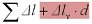
路徑位置*被描述為沿路徑的累積角度**變化。路徑長度*由下式給出：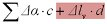
路徑位置*被描述為沿路徑的累積（線性變化+角度**變化）。路徑長度*由下式給出：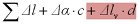
路徑位置*被描述為沿路徑的累積最大值（線性變化，角度**變化）。路徑長度*由下式給出：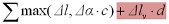
路徑位置*被描述為沿路徑的累積（線性變化，如果不為零，否則為角度**）。路徑長度*由下式給出：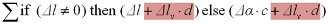
路徑位置*被描述為沿路徑的累積（角度**變化，如果不為零，否則為線性變化）。路徑長度*由下式給出：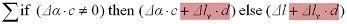
路徑位置*被描述為沿路徑的（線性變化，角度**變化）的累積歐幾里德距離。路徑長度*由下式給出：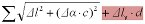
其中Δl和Δα分別是兩個連續的Bezier點之間的線性和角度變化。角度**變化是規則角度變化乘以角度係數c。 c稱為角度到線性的轉換係數，並且可以將角度值和線性值組合在一起。這意味著沿路徑的位置*或路徑長度*始終以線性單位（例如米）給出，而與上面選擇的位置計算方法無關。
默認情況下，紅色標記的項為零。該術語可以看作是Bezier點（或路徑控制點）的虛擬距離或第四坐標（即每個Bezier點將由方向和位置（x，y，z，w）定義，其中w是第四坐標）。這對於沿路徑歸檔暫停點很有用。是兩個連續的Bezier點之間的虛擬距離變化。 d是虛擬距離變化的比例因子（例如，如果d加倍，則所有暫停點的暫停持續時間將是兩倍）。為簡化起見，在以下內容中我們將不再提及該術語並將其設為零。
以下示例闡明了位置和長度計算概念：
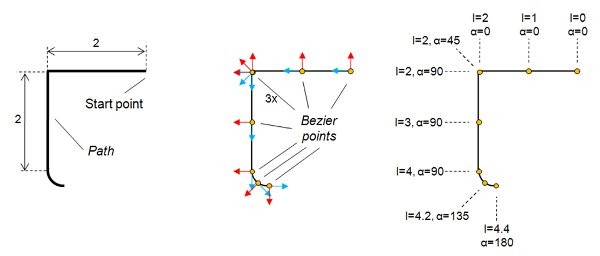
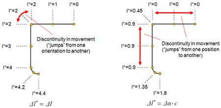
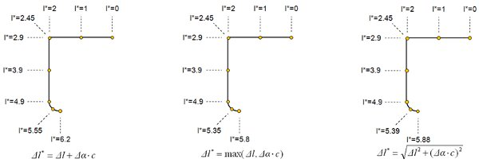
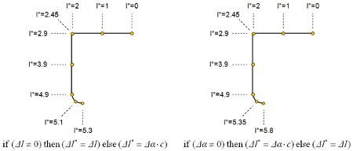
要歸檔沿路徑的特定點處的運動暫停，請執行以下操作：創建3個相同的路徑控制點（位置和方向完全重合），並為中間控制點指定一個虛擬距離值，該值不得為零。在下面的示例中，在3個重合點的虛擬距離為2（在第一和中間重合控制點之間為1，在中間和第三重合控制點之間為1）。如果某個對像以每秒1米的速度沿路徑行進，則它將在重合的控制點處記錄2秒的暫停
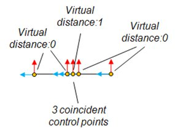
沿路徑運動(Movement along a Path)
當前固有路徑位置在路徑上顯示為紅色球形（如果啟用了路徑位置顯示）。在模擬過程中，可以隨時使用sim.setPathPosition來控制球沿路徑的位置。確保了解如何計算路徑位置或路徑長度。
要實際使對象沿路徑移動，首先需要將對象附加到虛擬對象，然後分配虛擬對像以遵循路徑位置（帶有可選的偏移量）。
導入和導出路徑(Importing and exporting paths)
路徑導入/導出功能可在CSV文件（逗號分隔值）上運行，該CSV文件可以用簡單的文本編輯器創建或讀取，但也可以輕鬆地導入/導出到Microsoft Excel等應用程序中。
導入路徑
CoppeliaSim的導入功能（[菜單欄->文件->導入-> CSV的路徑...]）逐行讀取值，其中每行對應一個控制點。每行應採用以下格式設置：
x，y，z，alpha，beta，gamma，relativeVelocity，BezierPointCount，interpolationFactor1，interpolationFactor2，
virtualDistance，auxiliaryFlags，auxiliaryChannel1，auxiliaryChannel2，auxiliaryChannel3，auxiliaryChannel4
其中內容相對應的意思：
（x，y，z）表示控制點在METERS中的位置
（α，β，γ）表示控制點的方向，以度數表示為歐拉角。默認值為（0,0,0）。
相對速度已棄用。設為1.0
BezierPointCount是控制點所需的Bezier點數。默認值為1。
InterpolationFactor1和InterpolationFactor2是在路徑控制點和Bezier點部分中描述的插值因子。默認值為0.5
VirtualDistance：虛擬距離值，添加到該控制點位置的路徑長度上，另請參見路徑位置或路徑長度計算方法。默認值為0.0
輔助標誌：可以用於各種目的的標誌，可以通過sim.getDataOnPath函數進行查詢。默認值為0。
輔助通道1-4：可以用於各種目的的值，可以通過sim.getDataOnPath函數進行查詢。默認值為0.0
除了前三個值（控制點位置坐標）外，所有其他值都可以省略，在這種情況下，將應用默認值。
導出路徑
通過選擇路徑，然後單擊[菜單欄->文件->導出->選定路徑為CSV ...]，可以導出路徑的控制點。在這種情況下，導出格式與前面描述的路徑導入格式相同。
也可以通過選擇路徑，然後單擊[菜單欄->文件->導出->所選路徑的Bezier曲線為CSV ...]來導出路徑的Bezier點。在這種情況下，創建的文件（導出的文件）中的每一行都對應一個Bezier點，並包含以下值：
x，y，z，alpha，beta，gamma，相對速度，虛擬距離，輔助標記，輔助通道1，輔助通道2，assistantChannel3，auxiliaryChannel4
路徑編輯模式(Path edit mode)
初步說明：路徑編輯模式是一種方便且功能齊全的編輯路徑對象的方法。但是，可以在不進入用於最小化路徑修改的路徑編輯模式的情況下移動和擦除單個路徑點（選擇單個路徑點時，請確保沒有選擇除路徑之外的其他對象）。
可以通過單擊相應的工具欄按鈕來訪問路徑編輯模式：
[路徑編輯模式工具欄按鈕]
上面的工具欄按鈕僅在選擇路徑後才有效。在路徑編輯模式下，窗口中通常顯示場景層次結構的部分用於將路徑控制點顯示為列表。可以使用鼠標選擇列表中的項目，就像在層次結構窗口中的對像一樣。
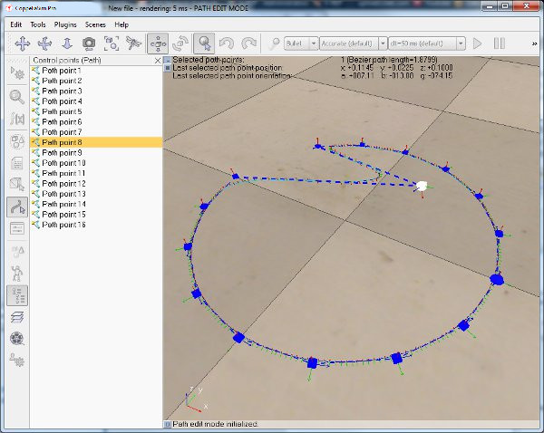
[路徑編輯模式]
現在可以像常規對像一樣選擇單個控制點。最後選擇的控制點以白色顯示，其他選擇的控制點以黃色顯示，未選擇的控制點以藍色顯示。以類似的方式，可以使用鼠標直接平移控制點，方法是使用工具欄的對象/項目平移工具欄按鈕在與視圖方向垂直的平面中平移所選的控制點：

[對象/項目翻譯工具欄按鈕]
在路徑編輯模式下，將顯示路徑編輯模式對話框：
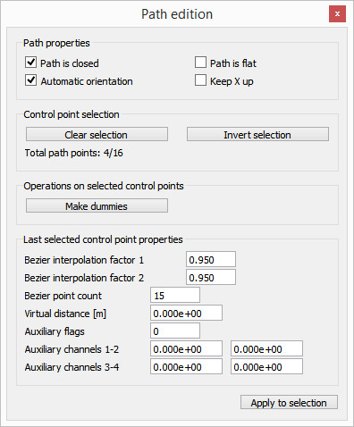
[控制點屬性對話框]
路徑已關閉：如果選中，則路徑的最後一個控制點將鏈接到其第一個控制點，以關閉路徑並使其循環運行。閉合路徑至少需要3個控制點。
路徑是平坦的：如果選中，則所有控制點（以及隨後的所有Bezier點）都將約束到路徑對象的本地參考系的z = 0平面。
自動定向：如果啟用，則將自動計算所有控制點和貝塞爾曲線點的定向，以使該點的z軸沿著路徑，其y軸指向其曲率向外（如果啟用了x up，則y -軸沒有特別限制）。如果禁用，則用戶確定控制點的方向，貝塞爾曲線點的方向將從路徑的控制點的方向內插。
保持x向上：如果選中，則自動定向功能將使每個Bezier點的z軸沿路徑對齊，並使其x軸沿路徑對象的z軸指向。
清除選擇：清除控制點的選擇。
反轉選擇：反轉控制點的選擇狀態。
製作虛擬對象：在選擇控制點的位置生成虛擬對象。
貝塞爾曲線插值因子1/2：有關詳細信息，請參見控制點和貝塞爾曲線部分。
貝塞爾曲線點數：有關詳細信息，請參見控制點和貝塞爾曲線部分。
虛擬距離：有關詳細信息，請參見關於沿路徑運動的部分。
輔助標誌：可以用於各種目的的標誌，可以通過sim.getDataOnPath函數進行查詢。
輔助通道1-4：可以用於各種目的的值，可以通過sim.getDataOnPath函數進行查詢。
為了精確定位控制點，請使用坐標和變換對話框。如果要編輯控制點的方向，請確保禁用路徑的“自動方向”選項（默認情況下啟用該選項）。
常規鍵組合（即ctrl-c，ctrl-v，delete和ctrl-x）支持複製/粘貼/刪除/剪切操作。確保主視圖具有焦點，以便按鍵起作用。如果未選擇任何控制點，則黏貼操作會將復制的控制點黏貼到控制點列表的開頭，否則將黏貼到選定的控制點之後（確保不超過一個控制點）。在此階段選擇）。也可以通過彈出菜單或通過[主菜單->編輯]訪問相同的複制/黏貼/刪除/剪切功能。其他操作包括：
在路徑的開頭插入新的路徑點/選擇後插入新的路徑點：如果未選擇任何控制點，則在路徑的開頭插入新的控制點；否則，在當前選擇之後插入新的控制點（請確保沒有其他內容）在這種情況下，選擇一個控制點）。
從貝塞爾曲線創建新路徑：使用當前路徑的貝塞爾點生成一個新的路徑對象，即新路徑的控制點將為當前路徑的貝塞爾點。
超頻樹(OC trees)
OC樹是代表空間分區的對象。它由樹形數據結構組成，其中每個節點正好具有八個子代。佔用的葉節點表示為體素。 OC樹可用於為形狀或點雲提供簡化的表示，或者可充當佔用網格/空間：
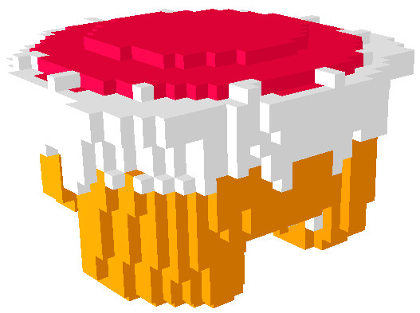
OC樹是可碰撞，可測量和可檢測的對象。這意味著OC樹：
可用於與其他可碰撞對象的碰撞檢測。
可與其他可測量對像一起用於最小距離計算。
可以被接近傳感器檢測到。
OC樹可以使用[菜單欄->添加-> OC樹]添加到場景中，並通過OC樹屬性進行編輯。
CoppeliaSim中可用的OC樹計算（即碰撞，距離和接近傳感器計算）也可以通過Coppelia幾何例程作為獨立例程使用。
OC樹屬性(OC tree properties)
OC樹屬性是場景對象屬性對話框的一部分，該對話框位於[菜單欄->工具->場景對象屬性]。您還可以通過雙擊場景層次結構中的對像圖標或單擊其工具欄按鈕來打開對話框：

[場景對象屬性工具欄按鈕]
在場景對象屬性對話框中，單擊OC樹按鈕以顯示OC樹對話框（僅當最後選擇的是OC樹時才會顯示OC樹按鈕）。該對話框顯示最後選擇的OC樹的設置和參數：
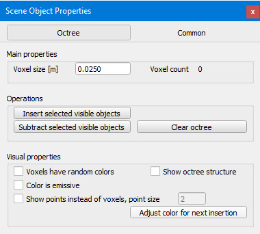
[OC樹對話框]
體素大小：OC樹體素的大小。大小越小，用於OC樹數據結構的內存就越大。
插入選定的可見對象：允許基於選定的可見對象插入體素。僅考慮虛擬對象，形狀，超頻樹和點雲。選擇要插入的所有對象，然後最後選擇目標OC樹對象。
減去選定的可見對象：允許基於選定的可見對象刪除體素。僅考慮虛擬對象，形狀，超頻樹和點雲。選擇要插入的所有對象，然後最後選擇目標OC樹對象。
清除OC樹：從OC樹中刪除所有體素。
體素具有隨機顏色：每個體素將具有隨機顏色。
顯示OC樹結構：顯示OC樹數據結構，主要用於調試目的。
顏色是自發光的：體素將以自發光的顏色顯示。
顯示點而不是體素：對於包含大量體素的OC樹，顯示可能會很慢。在這種情況下，您可以顯示像素體素，而不是立方體素。
調整下一次插入的顏色：允許選擇新的顏色，該顏色將用於新的體素插入。
點雲(Point clouds)
點雲是充當基於OC樹的點容器的對象：

點雲是可碰撞，可測量和可檢測的對象。這意味著點雲：
可用於與其他基於體積的可碰撞對象（例如OC樹）的碰撞檢測。
可與其他可測量對像一起用於最小距離計算。
可以被接近傳感器檢測到。
可以使用[菜單欄->添加->點雲]將點雲添加到場景，並通過點雲屬性進行編輯。
CoppeliaSim中可用的點雲計算（即碰撞，距離和接近傳感器計算）也可以通過Coppelia幾何例程作為獨立例程使用。
點雲屬性(Point cloud properties)
點雲屬性是場景對象屬性對話框的一部分，該對話框位於[菜單欄->工具->場景對象屬性]。您還可以通過雙擊場景層次結構中的對像圖標或單擊其工具欄按鈕來打開對話框：

[場景對象屬性工具欄按鈕]
在場景對象屬性對話框中，單擊“點雲”按鈕以顯示OC樹對話框（“點雲”按鈕僅在最後選擇的是點雲時出現）。該對話框顯示最後選擇的點雲的設置和參數：

[點雲對話框]
不要使用OC樹計算。結構：默認情況下，點雲使用類似於OC樹的計算結構進行有效的點操作。此結構可能會減慢插入點和刪除點的速度。如果啟用此項目，則點插入將更加有效，但是點雲將不再可碰撞，不可測量或不可檢測，並且某些其他操作也可能會受到限制。您始終可以在以後的階段或通過sim.setPointCloudOptions切換此項目。
最高體素大小：將包含點的OC樹體素的最大大小。大小越小，此點雲所基於的OC樹數據結構將使用的內存就越大。
最高點數/體素：單個OC樹體素可以包含的最大點數。如果需要在此類體素中存儲更多點，它將被拆分為8個子體素，直到滿足約束條件為止。為了有效地進行碰撞檢測，距離計算和接近傳感器檢測，建議在單個體素中存儲大約10-20個點。
插入選定的可見對象：允許基於選定的可見對象插入點。僅考慮虛擬對象，形狀，超頻樹和點雲。選擇要插入的所有對象，然後最後選擇目標點雲對象。形狀將事先轉換為具有指定構建分辨率的臨時OC樹。插入公差項允許通過指定用於確定是否插入點的最小距離公差來避免重複的點。插入公差> 0.0時，點插入將變慢。
減去選定的可見對象：允許基於選定的可見對象減去點。僅考慮虛擬變量，超頻樹和點雲。選擇要減去的所有對象，然後最後選擇目標點雲對象。假人和點雲將使用減法公差值來標識要刪除的點。
清除點雲：從點雲中刪除所有點。
點具有隨機顏色：每個點將具有隨機顏色。
顯示OC樹結構：顯示底層OC樹數據結構，主要用於調試目的。
顏色是自發光的：點將以自發光的顏色顯示。
點顯示比例：包含大量點的點雲可能會減慢渲染速度。通過將比率設置為小於1，將為每個包含點的OC樹體素顯示更少的點數。這僅對顯示/渲染的圖像有影響。
點大小：點的大小，以像素為單位。
調整下一次插入的顏色：允許選擇一種新的顏色，該顏色將用於新的點插入。
外部控制器教程(External controller tutorial)
在CoppeliaSim中，有幾種方法可以控制機器人或仿真：
最方便的方法是編寫一個子腳本來處理給定機器人或模型的行為。這是最方便的方法，因為子腳本直接附加到場景對象，它們將與相關的場景對像一起復制，它們不需要使用外部工具進行任何編譯，它們可以在線程或非線程模式下運行，它們可以通過自定義Lua函數或Lua擴展庫進行擴展。使用子腳本的另一個主要優點是：與本節中提到的後3種方法（即使用常規API）一樣，沒有通信延遲，並且子腳本是應用程序主線程的一部分（固有的同步操作）。但是，編寫腳本有幾個缺點：您無法選擇編程語言，不能擁有最快的代碼，並且除了Lua擴展庫之外，無法直接訪問外部函數庫。
可以控制機器人或模擬的另一種方法是編寫插件。插件機制允許使用回調機制，自定義Lua函數註冊，當然還可以訪問外部函數庫。插件通常與子腳本結合使用（例如，插件註冊自定義的Lua函數，當從子腳本中調用時，該Lua函數將回調特定的插件函數）。使用插件的主要優勢還在於，與本節中提到的後3種方法（即使用常規API）一樣，沒有通信延遲，並且插件是應用程序主線程的一部分（固有的同步操作）。插件的缺點是：它們的編程更加複雜，並且也需要使用外部編譯。另請參閱插件教程。
控制機器人或模擬的第三種方法是編寫依賴於遠程API的外部客戶端應用程序。如果您需要從外部應用程序，機器人或另一台計算機運行控制代碼，這是一種非常便捷的方法。這也使您可以使用與運行真實機器人完全相同的代碼來控制仿真或模型（例如虛擬機器人）。遠程API有兩個版本：基於B0的遠程API和舊版遠程API。
控制機器人或仿真的第五種方法是通過ROS節點。 ROS與遠程API相似，是使多個分佈式進程相互通信的便捷方法。儘管遠程API非常輕巧且快速，但它僅允許與CoppeliaSim通信。另一方面，ROS允許幾乎將任意數量的進程相互連接，並且提供了大量兼容的庫。但是，它比遠程API重並且更複雜。有關詳細信息，請參閱ROS接口。
控制機器人或模擬的第六種方法是通過BlueZero（BØ）節點。與ROS類似，BlueZero是使多個分佈式進程相互通信的一種便捷方法，並且是一種輕量級的跨平台解決方案。有關詳細信息，請參考BlueZero界面。
控制機器人或模擬的第七種方法是編寫一個外部應用程序，該應用程序通過各種方式（例如管道，套接字，串行端口等）與CoppeliaSim插件或CoppeliaSim腳本進行通信。選擇編程語言（可以是任何一種語言）和靈活性是兩個主要優點。同樣，控制代碼也可以在機器人或其他計算機上運行。但是，與使用遠程API的方法相比，這種控制仿真或模型的方法更加乏味。
有8個與本教程相關的場景文件：
scenes / controlTypeExamples /受控ViaScript：一個機器人是通過非線程子腳本控制的，另一個是通過線程子腳本控制的。
scenes / controlTypeExamples /受控ViaPlugin：機器人是通過插件控制的。
scenes / controlTypeExamples / controlViaB0RemoteApi：通過基於B0的遠程API來控制機器人。
scenes / controlTypeExamples /受控ViaLegacyRemoteApi：通過舊版遠程API控制機器人。
scenes / controlTypeExamples / controlViaB0：通過BlueZero界面控制機器人。
scenes / controlTypeExamples /受控ViaRos：通過ROS接口控制機器人。
scenes / controlTypeExamples / controlViaRos2：通過ROS2接口控制機器人。
scenes / controlTypeExamples /受控ViaTcp：通過LuaSocket和TCP控制機器人。
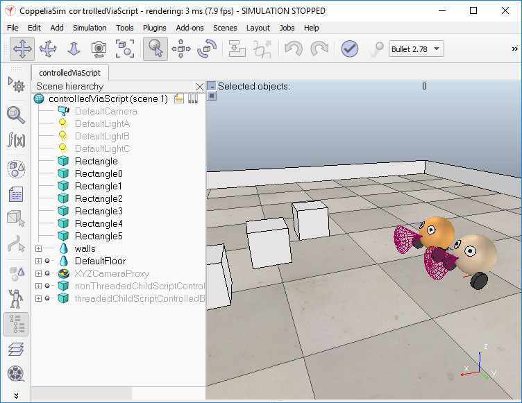
在所有8種情況下，都使用子腳本，主要是為了與外界建立鏈接（例如，啟動正確的客戶端應用程序，並將正確的對象句柄傳遞給它）。有兩種其他方法可以控制機器人，模擬或模擬器本身：使用自定義腳本或附加組件。但是，不建議將它們用於控制，而應使用在模擬未運行時處理功能。
例如，鏈接到場景控制的ViaB0RemoteApi.ttt中的機器人的子腳本具有以下主要任務：
使用某些對象句柄作為參數啟動控制器應用程序（bubbleRobClient_b0RemoteApi）。基於對象B0的遠程API的服務器功能由對象b0RemoteApiServer提供。
作為另一個示例，鏈接到場景控制的ViaRos.ttt中的機器人的子腳本具有以下主要任務：
檢查是否已加載CoppeliaSim的ROS接口
使用某些主題名稱或對象句柄作為參數啟動控制器應用程序（rosBubbleRob）
然而，作為另一個示例，鏈接到場景控制的ViaTcp.ttt中的機器人的子腳本具有以下主要任務：
搜索空閒的套接字連接端口
使用所選的連接端口作為參數啟動控制器應用程序（bubbleRobServer）
本地連接到控制器應用程序
在每次仿真過程中，將傳感器值發送到控制器，並從控制器讀取所需的電機值
在每次模擬過程中，將所需的電機值應用於機器人的關節
運行模擬，然後復制並粘貼機器人：您將看到重複的機器人將直接運行，因為附加的子腳本負責啟動各自外部應用程序的新實例，或調用適當的插件函數。
心得
CoppeliaSim 裡面有許多功能可以供我們使用，例如裡面的假人可以被用來測量與機器人的距離，可以被偵測器偵測到的，同時具有可以放在路徑上做為輔助的對象……等，在這個電子書裡讓我訝異的是他的API 不是只有Python能用而已，可以用許多程式來寫API，讓我覺得自己所學的還不太足夠應該多加努力。
python 更新 <<
Previous Next >> Assignment2